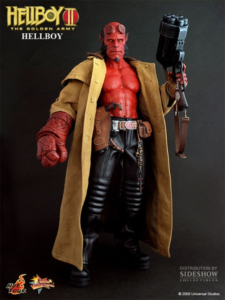
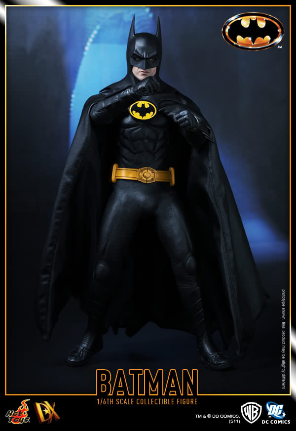
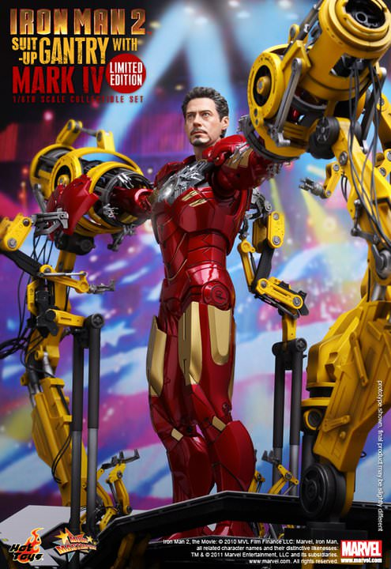
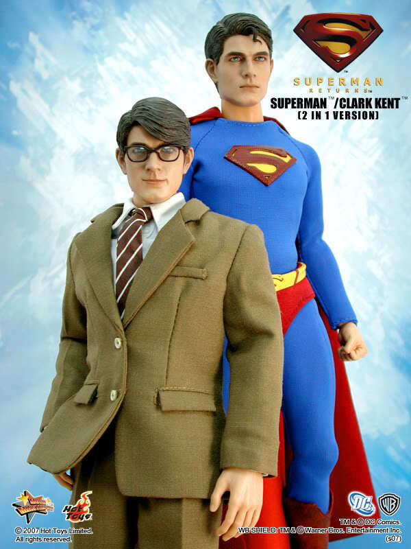

Primero veremos la figura de Hellboy en la Película Hellboy 2, numerada MMS83. Una figura muy demandada por los coleccionista con un cuerpo esculpido en goma roja especialmente para el. Lanzada en el año 2009, actualmente la podemos encontrar por unos 400~500$.Cafeteria
Av Francisco I Madero, Veracruz, Coatzacoalcos
Aquí tenemos a Batman y en el nº 12 al Joker, ambos de la película Batman de 1989 de Tim Burton. El Batman de Michael Keaton y el Joker de Jack Nicholson representados a la perfección, actualmente las podemos encontrar por unos 550~700$.
Morelos, Veracruz Coatzacoalcos
Continuamos ahora con Iron Man Mark IV y el Suit Up Gantry de la Película de Iron Man 2, numerada MMS160. Figura que incluye el pack de Iron Man junto a este robot de Montaje para sus armaduras y que con la reciente salida de su versión diecast la MMS462 seguramente baje de precios en breves. Se puede encontrar por unos 950~1200$.
Palacio de Gobierno, Oaxaca, Juchitan
La siguiente figura que vemos es a Superman / Clark Kent (" in 1 Version), en la película Superman Returns. Figura del año 2008 que tenía la peculiaridad de poder cambiar de traje para elegir si es un super héroe o un periodista, actualmente esta figura la no la podemos encontrar por menos de 1200$.
